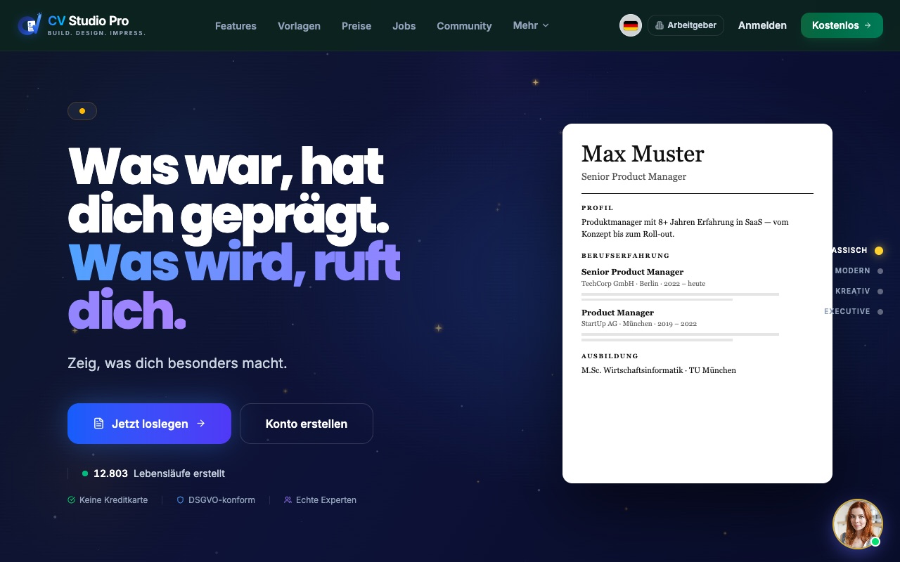
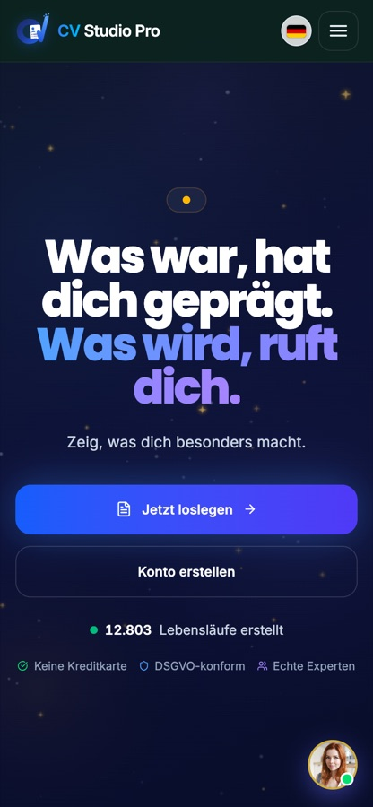
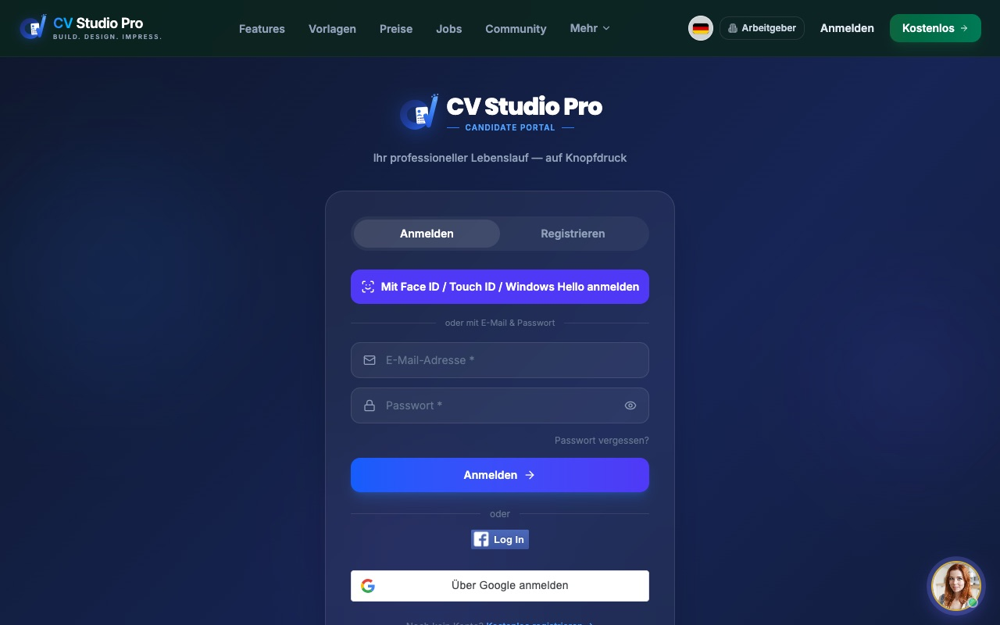
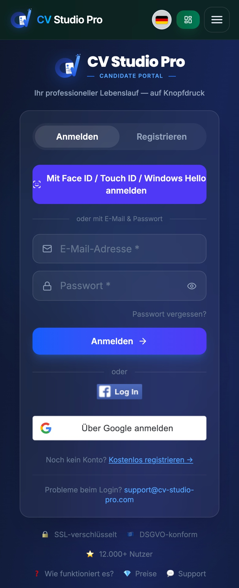

Funktioniert auch ohne Internet. Dein CV bleibt auf deinem Gerät, bis du ihn online stellst.


Drei Downloads, alle gleichwertig. Such dir den passenden aus.
Für alle PCs und Laptops mit Windows
Herunterladen⬇Benötigt macOS 11 oder neuer
Herunterladen⬇Benötigt macOS 11 oder neuer
Herunterladen⬇Die App ist noch nicht von Apple geprüft. Deshalb zeigt macOS beim ersten Start eine Warnung. Das ist normal und lässt sich einmalig freigeben. Unter Windows läuft der Installer von selbst durch.
Doppelklick auf die Datei. Ziehe CV Studio in den Ordner Programme.
Es erscheint „CV Studio nicht geöffnet“. Klicke auf Fertig. Nicht auf „In den Papierkorb legen“.
Öffne Systemeinstellungen → Datenschutz & Sicherheit, scrolle nach unten zu „Sicherheit“ und klicke Trotzdem öffnen.
Bestätige mit deinem Mac-Passwort oder Touch ID und klicke dann auf Öffnen. Ab jetzt startet CV Studio ganz normal.
Wenn dir die Systemeinstellungen zu umständlich sind, kopiere diese Zeile ins Programm Terminal und drücke Enter. Danach öffnet sich die App ohne Warnung:
xattr -dr com.apple.quarantine "/Applications/CV Studio.app"
Das entfernt nur die Markierung „aus dem Internet geladen“ von dieser einen App.
Kein Problem. Hol die App aus dem Papierkorb zurück oder öffne die .dmg noch einmal und ziehe CV Studio erneut in „Programme“. Danach weiter mit Schritt 2.
Dann ist dein macOS älter als 11 (Big Sur):
Die Desktop-App ist CV Studio in einem eigenen Fenster mit eigenem Symbol im Dock oder in der Taskleiste.


Die App öffnet auch ohne Internet. Du bearbeitest deinen CV unterwegs und im Zug.
Nur auf diesem Gerät oder online. Die App zeigt immer, wo dein CV gerade ist.
Die App richtet eine lokale KI (Ollama) ein. Kein API-Schlüssel nötig, Texte bleiben auf deinem Gerät.
Öffne CV Studio im Browser und installiere es als App. Du brauchst dafür keinen Download: